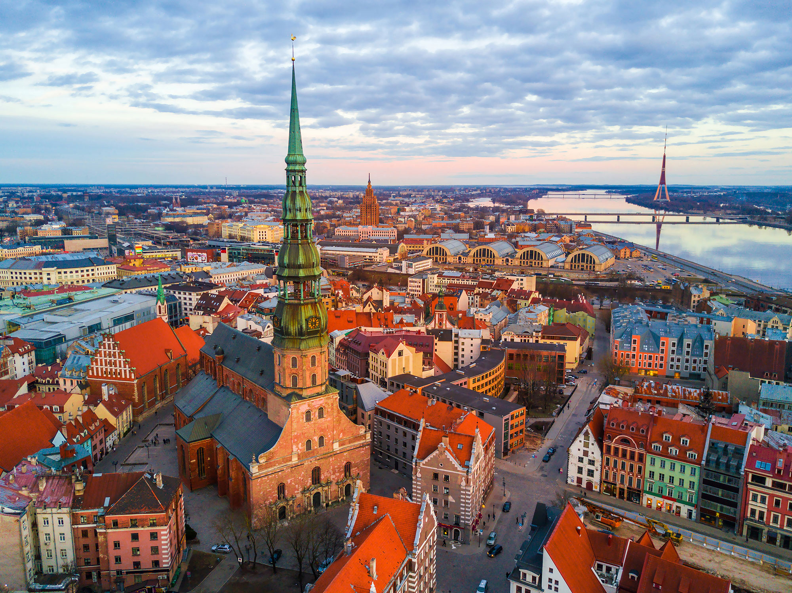

Welcome to Riga
The stunning capital city of Latvia!
Main Attractions in Riga
1. Old Town (Vecrīga)
The historic center of Riga is a UNESCO World Heritage Site filled with medieval buildings, narrow cobblestone streets, and charming squares.2. Riga Cathedral
Built in 1211, this is the largest medieval church in the Baltics, featuring an impressive organ and beautiful architecture.3. House of the Blackheads
Originally built in the 14th century, this stunning building was a meeting place for wealthy merchants. It was destroyed in WWII but meticulously rebuilt.4. Art Nouveau District
Riga has one of the world’s highest concentrations of Art Nouveau architecture, with over 800 buildings showcasing intricate facades and sculptures.5. Freedom Monument
A symbol of Latvian independence, the 42-meter-tall monument honors soldiers who died during the Latvian War of Independence (1918–1920).Where to Go in Riga ?
1. Central Market
One of Europe's largest markets, housed in old Zeppelin hangars, offering fresh produce, meats, and traditional Latvian foods.2. Latvian National Opera & Ballet
A perfect place for culture lovers, offering world-class performances in a stunning historic building.3. Skyline Bar
Located on the 26th floor of the Radisson Blu Hotel, this bar offers breathtaking panoramic views of the city.4. Riga’s Museum of Art
Riga’s Museum of Art is the largest art museum in Latvia, showcasing an extensive collection of Latvian and Baltic art from the 18th century to modern times, housed in a beautifullyrestored historic building.
5. Riga Zoo
Riga Zoo, located in Mežaparks, is home to over 400 species from around the world, offering a family-friendly experience with a focus on wildlife conservation and education.Why Riga?
Riga is a charming city is a melting pot of cultures, architecture, and history. Known for its impressive art nouveau buildings, picturesque Old Town, and delicious cuisine,
Riga has something for everyone.
From the bustling nightlife to the serene beauty of the nearby beaches, Riga is a vibrant and exciting destination waiting to be discovered.
So come and explore the magic of Riga,where the past meets the present in a truly unique and captivating way!
With its lively markets and cozy cafés, the city offers a perfect blend of tradition and modernity. Strolling along the Daugava River, you’ll witness breathtaking sunsets that paint the
skyline
in warm hues. Whether you're a history enthusiast, a foodie, or an adventurer, Riga promises unforgettable experiences at every turn.

Interesting Facts
1. Riga is the birthplace of jeans! In the 1870s, Latvian tailor Jacob Davis co-invented riveted denim pants with Levi Strauss.
2. The tallest wooden church in Europe is in Riga – St. Peter’s Church has a 123-meter-high wooden spire.
3. Riga Black Balsam is a famous Latvian herbal liqueur with a history dating back to 1752. Legend says it once cured Russian Empress Catherine the Great!
4. Christmas trees originated in Riga – The world’s first decorated Christmas tree was recorded here in 1510.
Extra fact about cats
Loading...